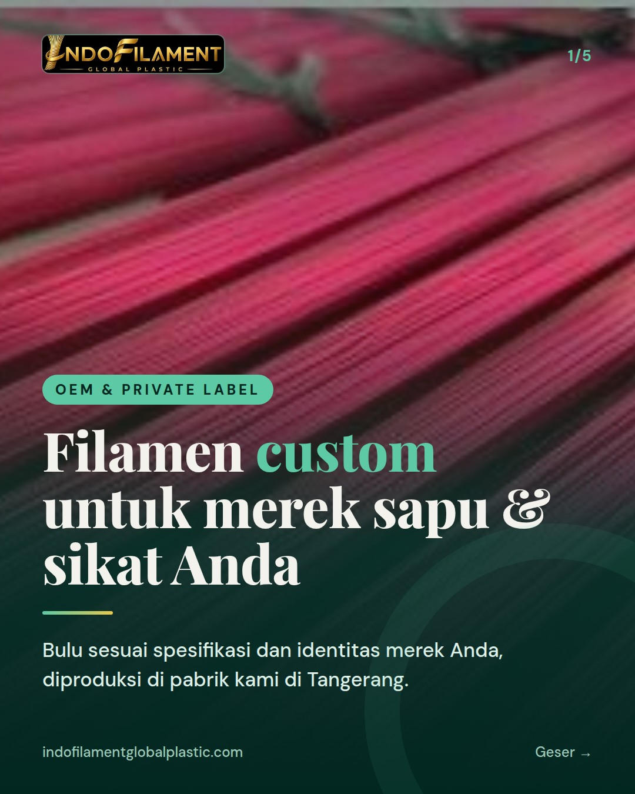
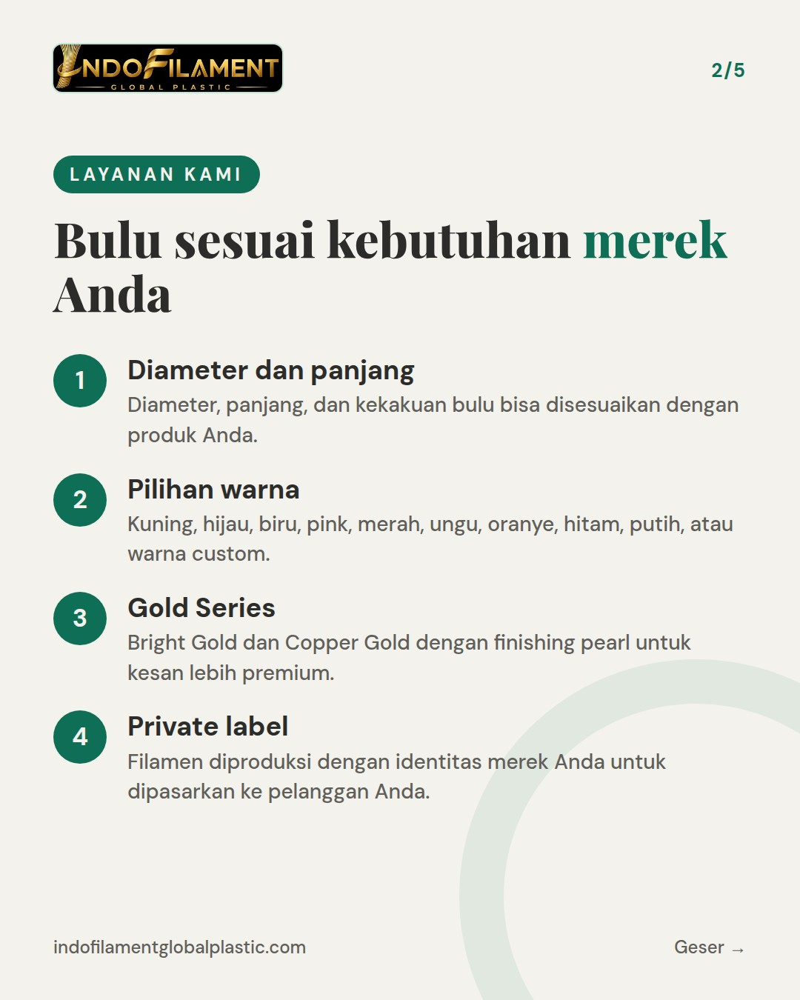
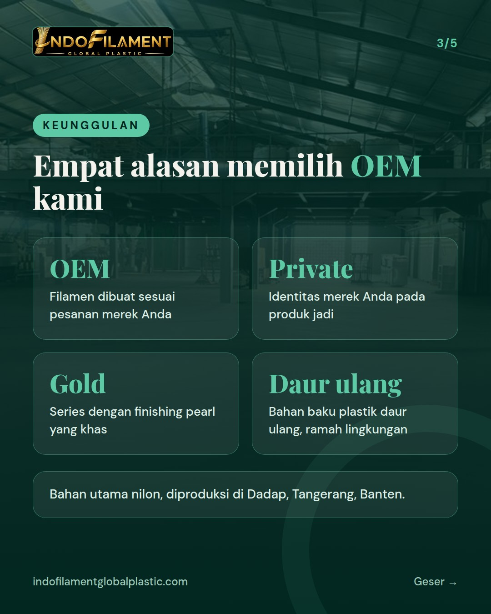
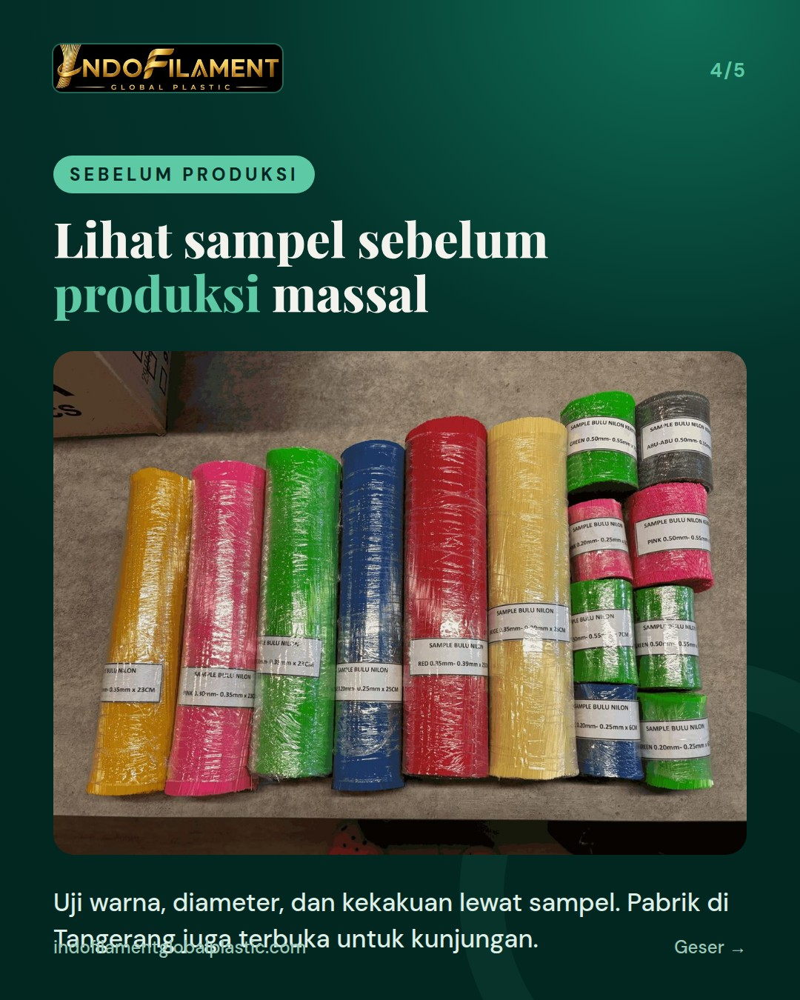
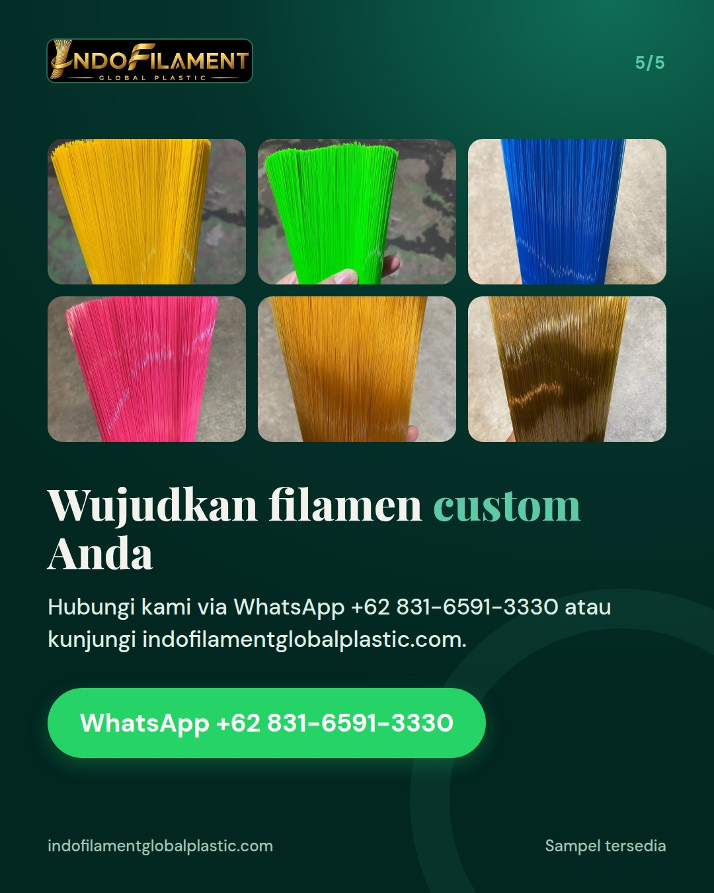

OEM & private label: filamen custom untuk merek sapu/sikat Anda





Punya merek sapu atau sikat sendiri tapi ingin bulu yang benar-benar sesuai karakter produk Anda? Di Indofilament, filamen bisa dibuat custom (OEM) dan private label, mulai dari warna, diameter, panjang, hingga kekakuan. Pilihan warnanya lengkap, termasuk seri Gold dengan finishing pearl. Bahan utamanya nilon dari bahan baku plastik daur ulang, jadi tetap ramah lingkungan. Sebelum produksi massal, Anda bisa meminta sampel untuk menguji hasilnya. Pabrik kami di Tangerang juga terbuka untuk kunjungan dari pemilik merek, distributor, dan importir. Minta sampel via WhatsApp +62 831-6591-3330 atau DM kami sekarang. We offer custom nylon filament (OEM & private label) for broom and brush brands. Samples are available on request. #bulusapu #bulusikat #filamen #pabriksapu #OEM #privatelabel #madeinindonesia #broomfilament #brushfilament #pabrikTangerang